2026-03-28
Claude 怎麼用？Anthropic 官方 85 個使用情境完整解析，六成不用寫程式
Anthropic 官方整理 85 個 Claude 真實使用情境，橫跨 12 大職場類別。本文深度解析五大新功能、模型選擇策略，以及企業導入 AI 的務實建議。

2026-03-24
NVIDIA 用開源搶佔 AI Agent 生態——GTC 2026 Agent Toolkit 完整解析
黃仁勳在 GTC 2026 發布 Agent Toolkit 開源軟體堆疊，包含 NemoClaw、OpenShell 安全沙箱、Nemotron 開源模型和 AI-Q 企業藍圖。這是 NVIDIA 從硬體公司轉型為 AI 生態平台的關鍵一步。

2026-03-24
你的工程師用 AI 寫的 code，45% 可能有漏洞——OpenAI Codex Security 如何改變資安遊戲規則
OpenAI 推出 Codex Security，一隻 AI 資安 agent 在 30 天內掃描 120 萬筆 commit、揪出 14 個全球級 CVE 漏洞。阿峰老師深度解析這對台灣企業資安治理的意義。

2026-03-21
企業選 AI 工具的四個判斷軸：從日本最大 AI 社群的觀察到台灣培訓現場的實戰經驗
企業評估 AI 工具不該看跑分排行，而是看長文處理、資料安全、組織展開、輸出穩定四個面向。結合日本 SHIFT AI 木内翔大的框架與阿峰老師 400+ 企業培訓經驗的完整分析。
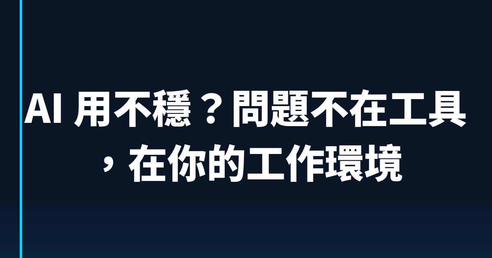
2026-03-20
AI 用不穩？問題不在工具，在你的工作環境
為什麼同一個 AI 工具，有人用得順到飛起來，有人每次都在重來？差別不在 prompt 寫得好不好，而是你有沒有幫 AI 建一套工作環境。三個步驟教你升級。

2026-03-20
Obsidian + Claude Code：矽谷 AI 圈都在用的第二大腦組合，為什麼比 Notion 更適合 AI 時代？
Robert Scoble 說矽谷 AI 核心技術人都在用 Obsidian。本文深度分析 Obsidian + Claude Code 為何成為 AI 時代最佳知識管理組合，含操作指南與企業應用場景。

2026-03-19
Google Workspace 大更新：Gemini 深度整合 Docs、Sheets、Slides、Drive，AI 辦公進入新階段
Google 在 2026 年 3 月發布 Workspace 歷來最大 AI 整合更新。Gemini 深度整合進 Docs、Sheets、Slides、Drive，跨應用整合、一句話建表、自動填資料等功能全面上線。本文完整解析四大 App 升級內容、三大巨頭競爭格局，以及企業該怎麼選。

2026-03-18
Naval Ravikant 的施法者理論：AI 時代你拿到魔杖了，然後呢？
Naval Ravikant 說 AI 是每個人手中的魔杖，我們正在進入施法者的時代。但魔杖人人都有，真正的差距在哪？400+ 企業培訓經驗告訴你答案。
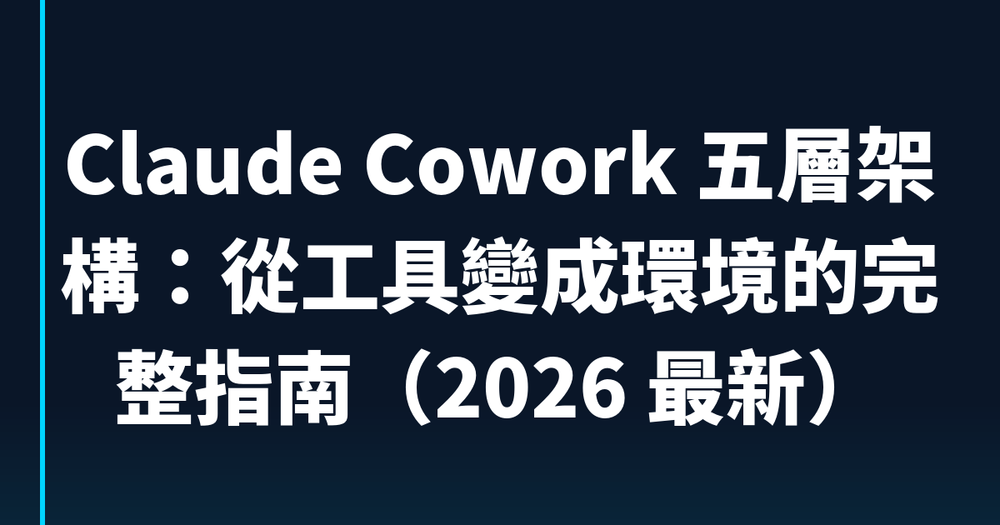
2026-03-18
Claude Cowork 五層架構：從工具變成環境的完整指南（2026 最新）
Claude Cowork 用得不穩定？問題不在 AI，在環境。用五層架構（Context、Instructions、Skills、Connectors、Scheduled Tasks）把 Cowork 從工具升級成自動化工作系統，附一個月建置路線圖。
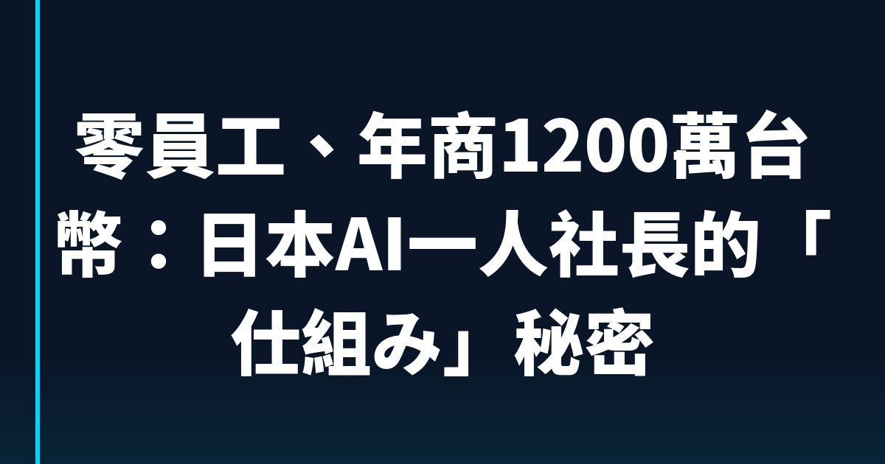
2026-03-17
零員工、年商1200萬台幣：日本AI一人社長的「仕組み」秘密
日本出現年商6000萬日圓的電商一人社長，靠的不是加班，而是把AI從工具升級成機制。本文拆解仕組み思維、75%工時削減案例，以及你現在就能用的流程設計框架。

2026-03-17
Claude Code 進階：你可能不知道的六層架構與上下文管理術
Claude Code 不是聊天機器人，是六層代理系統。從上下文分層、MCP 管理到 Prompt Caching，完整解析讓你從「會用」升級到「用得好」的關鍵實踐。
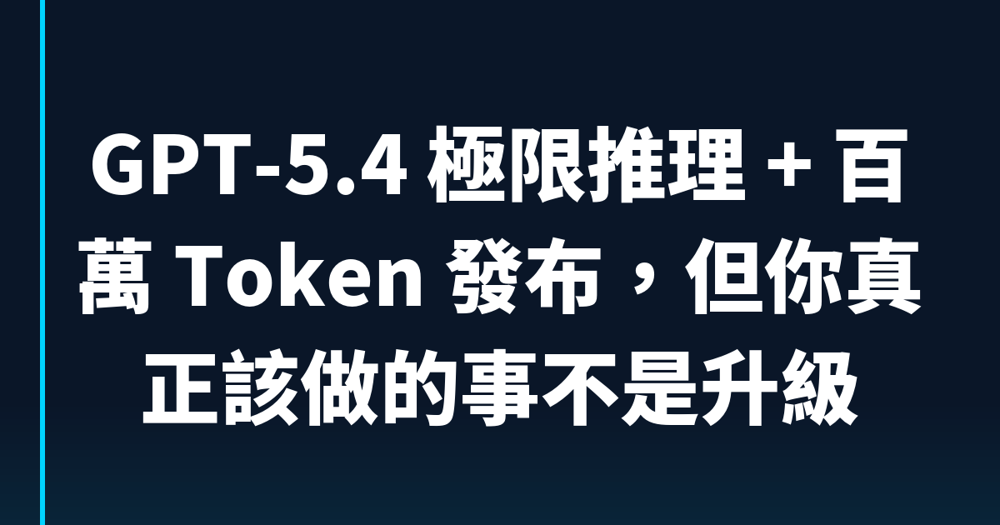
2026-03-17
GPT-5.4 極限推理 + 百萬 Token 發布，但你真正該做的事不是升級
GPT-5.4 帶來 Extreme Reasoning 和百萬 Token 上下文，但 GPT-5.1 才上市六個月就退役了。這告訴企業一件事：停止追模型，開始建立你的 AI 工作流。
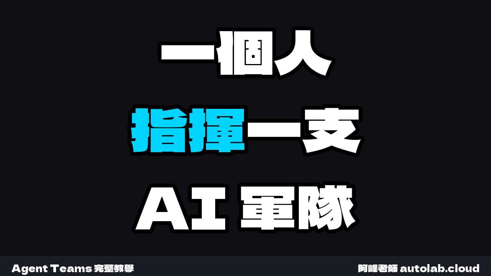
2026-03-17
Claude Code Agent Teams 完全指南：從 Sub-agent 到多 AI 協作的架構升級

2026-03-16
AI龍蝦暴紅真相：OpenClaw千人排隊裝AI，背後12%惡意技能你知道嗎？
中國深圳騰訊總部外千人排隊安裝OpenClaw AI Agent，「養龍蝦」現象席捲中國職場。但技能市集ClawHub有335個惡意包、CVSS 8.8高危漏洞，台灣企業該如何看待這波AI Agent浪潮？
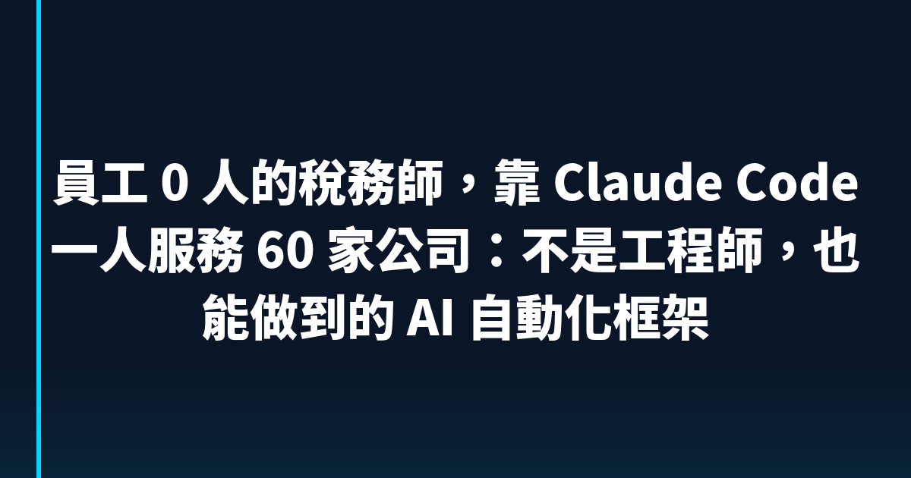
2026-03-16
員工 0 人的稅務師，靠 Claude Code 一人服務 60 家公司：不是工程師，也能做到的 AI 自動化框架
日本稅務師畠山謙人如何用 Claude Code 以 0 名員工服務 60 家客戶，每年省下 600 萬台幣人事費？完整拆解他的系統設計、CLAUDE.md 業務手冊、兩階段判斷機制，以及非工程師如何複製這套框架。
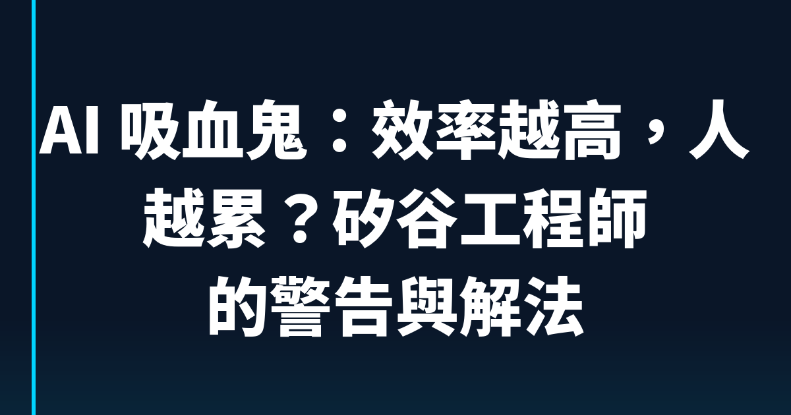
2026-03-16
AI 吸血鬼：效率越高，人越累？矽谷工程師的警告與解法
用 AI 工作效率提升 10 倍，但為什麼反而更累了？矽谷 40 年工程師 Steve Yegge 把這個現象叫做 AI 吸血鬼。哈佛商業評論追蹤 200 人也確認了惡性循環。本文帶你看清楚問題在哪，以及怎麼應對。
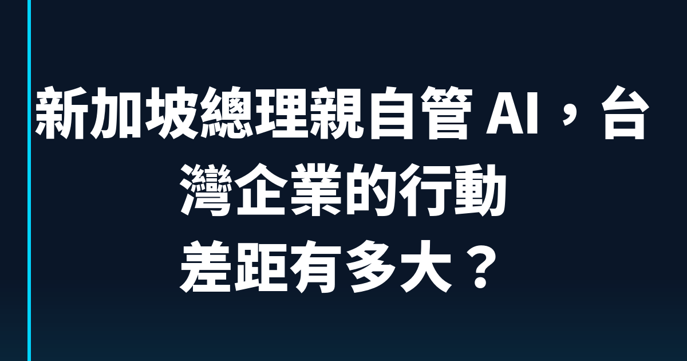
2026-03-16
新加坡總理親自管 AI，台灣企業的行動差距有多大？
新加坡總理親自當 AI 理事會主席，三年一萬家企業導入 AI。台灣半導體全球最強，但 AI 落地速度差在哪？
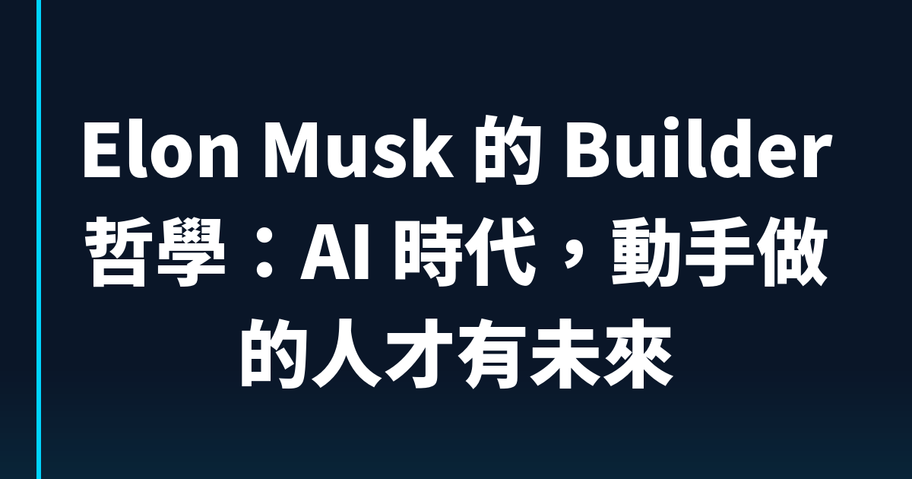
2026-03-16
Elon Musk 的 Builder 哲學：AI 時代，動手做的人才有未來
Musk 在 Giga Berlin 訪談說他最敬佩 Builder。AI 時代，真正稀缺的不是會用 AI 的人，是願意動手做出東西的人。阿峰老師拆解 Builder 哲學的 5 個 AI 時代啟示。
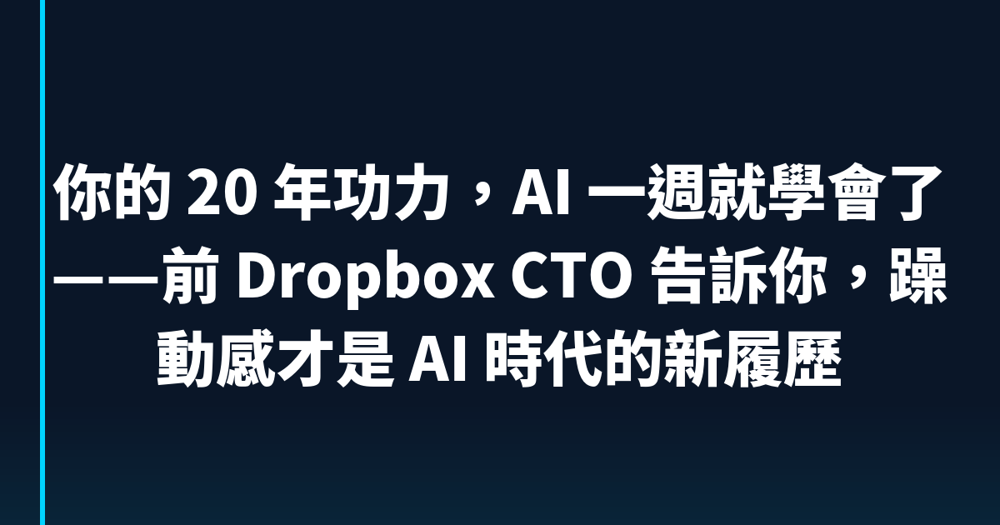
2026-03-16
你的 20 年功力，AI 一週就學會了——前 Dropbox CTO 告訴你，躁動感才是 AI 時代的新履歷
前 Dropbox CTO Aditya Agarwal 花 5 天寫出 5 年份程式碼後的反思：工作年資跟 AI 適應力幾乎零相關，真正的指標是「做過東西的痕跡」和停不下來的躁動感。
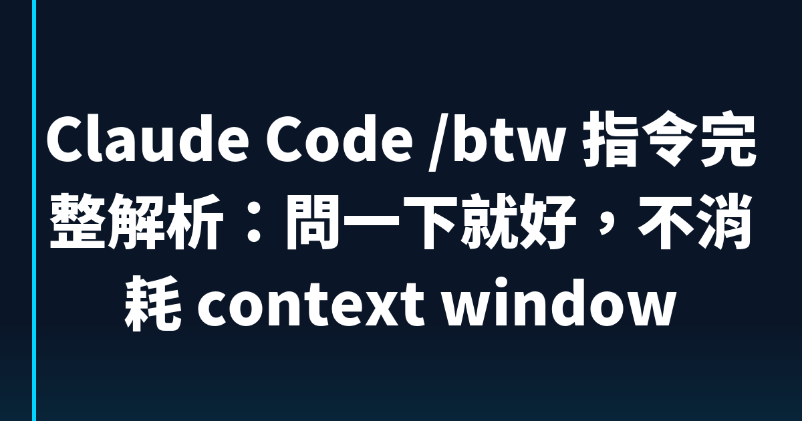
2026-03-16
Claude Code /btw 指令完整解析：問一下就好，不消耗 context window
Claude Code 2.1.72 新推出 /btw 旁問功能，讓你在工作流中插問一個問題，不進入對話歷史、不消耗 context window，可減少約 50% token 消耗。本文完整說明使用方式、限制與場景。
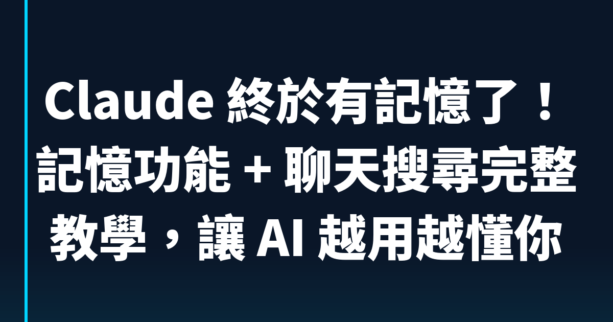
2026-03-16
Claude 終於有記憶了！記憶功能 + 聊天搜尋完整教學，讓 AI 越用越懂你
Anthropic 2026 年 3 月重大更新：記憶功能全員免費開放，聊天搜尋讓歷史對話變知識庫，跨 AI 工具記憶搬家。本文完整教你怎麼設定、怎麼用、企業版有哪些控制機制。

2026-03-16
OpenClaw 用不起來？544 個使用案例幫你找到入門起點
噪噪溫斯頓整理了 544 個 OpenClaw 使用案例，涵蓋 11 個工作主題。不用看完整影片，Copy Prompt 貼給龍蝦，馬上開始設定。本文教你怎麼用，還有最被忽略的進階玩法。
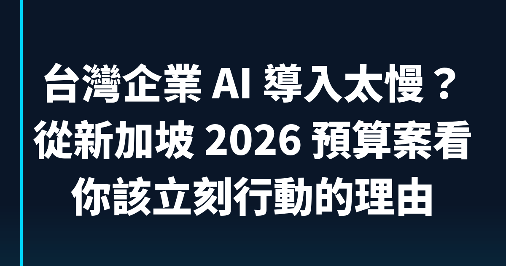
2026-03-15
台灣企業 AI 導入太慢？從新加坡 2026 預算案看你該立刻行動的理由
新加坡總理親自掛帥推動 AI 國家戰略，三年要讓一萬家企業導入 AI。台灣企業該怎麼跟上？阿峰老師從 400 家企業培訓經驗，拆解台灣中小企業 AI 導入的實操步驟。
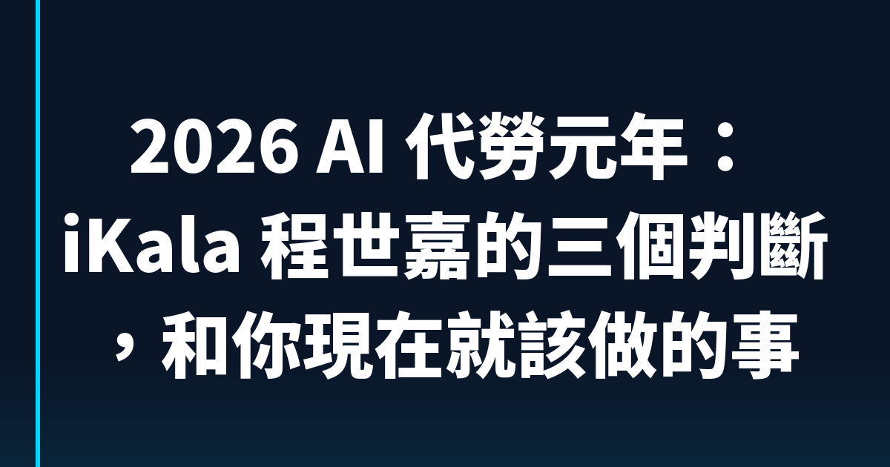
2026-03-14
2026 AI 代勞元年：iKala 程世嘉的三個判斷，和你現在就該做的事
iKala 董事長程世嘉判斷 2026 年是 AI 代勞元年。全球 57% 企業已正式導入 AI Agent，台灣企業該怎麼跟上？阿峰老師從 400+ 企業培訓經驗分析三道隱形門檻和解法。

2026-03-14
Untitled

2026-03-11
OpenClaw 全解析：當 AI 從顧問變成員工，台灣企業需要知道什麼
GitHub 全球第一的 AI Agent 系統 OpenClaw，5 個月超越 React。本文深入解析技術架構、安全風險、部署方式，以及台灣企業真正需要評估的三個面向。
2026-03-10
讓 AI 記住你的工作方式：Claude Skill 實戰指南
你花在教 AI 怎麼配合你的時間，可能比 AI 幫你省的時間還多。Anthropic 官方 33 頁 Skills 指南的中文深度解讀，加上阿峰老師的企業導入建議。
2026-03-10
NotebookLM 資訊圖表不再千篇一律：10 種風格 × 3 種閱讀動線完整攻略
Google NotebookLM 資訊圖表三月大更新，新增 10 種視覺風格。但光換風格不夠，閱讀動線才是讓圖表從「好看」變「好懂」的關鍵。三種動線 × 十種風格的實戰搭配指南。
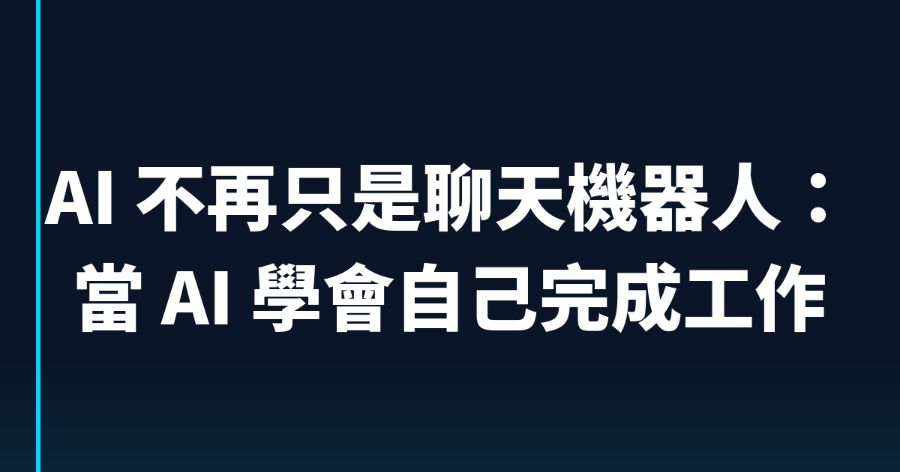
2026-03-09
AI 不再只是聊天機器人：當 AI 學會自己完成工作
AI 代理不再等你問問題，直接幫你完成任務。從客製化聯繫、競品追蹤到內容多平台轉換，企業培訓專家的第一手觀察。

2026-03-09
AI 時代組織怎麼跑？91APP 三十幾個團隊的實戰經驗拆解｜阿峰老師
91APP 有 30+ 個開發團隊全面導入 AI，產品長分享職稱邊界消失、Sprint 估點數失去意義的實戰觀察。阿峰老師獨家分析自動化工具的典範翻轉和 Agent UX 設計。

2026-03-09
業務用 AI 不只是寫信：100+ 個 AI 代理提示詞揭露的差距
國外業務團隊已經用 AI 代理分析贏單模式、準備客戶通話、監控 Pipeline。Highspot 整理的 100+ 提示詞，揭露台灣企業與國際的 AI 應用差距。

2026-03-09
OpenAI 駕馭工程：AI Agent 五個月零手寫百萬行程式碼，軟體開發典範轉移
OpenAI 發表 Harness Engineering 研究，AI Agent 五個月從零寫出百萬行程式碼。拆解三大核心教訓、台灣企業實務對照，以及如何在你的工作中應用駕馭工程思維。
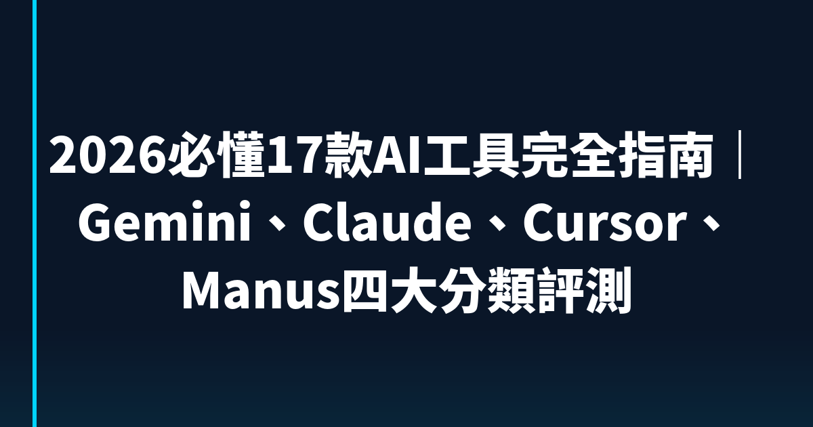
2026-03-09
2026 年普通人必備 6 個 AI 技能：精準提問、AI 搜尋、寫作、圖片、影片、自動化完整教學
不用寫程式也能用 AI 改變工作方式！精準提問四要素、Perplexity AI 搜尋、AI 寫作三段位、圖片影片生成、自動化工作流，六個實戰技能完整教學。

2026-03-09
2026 普通人必備的 6 個 AI 技能：一人公司的基礎建設
不用寫程式，這 6 個 AI 技能讓一個普通人扛起整間公司。結構化提示詞、AI 智能體、數字大腦、工作流自動化、零代碼開發、批量內容生成完整教學。

2026-03-08
ChatGPT Skills 正式登場！比 GPT 5.4 更值得注意的新功能
ChatGPT 悄悄上線 Skills 功能，讓你幫 AI 設定固定工作流程。本文完整解析 Skills 操作指南、Manus 匯入教學，以及企業如何用 Skills 解決 AI 產出不穩定的問題。

2026-03-08
AI 翻譯為何翻不好「林宅血案」？元首口譯揭開文化轉譯的真正難題
華視林宅血案訪談推向國際，AI 翻譯卻慘不忍睹。元首口譯葉妍伶接手後揭露 AI 翻譯三大盲區：同音字辨識、簡體語境偏差、文化意象轉換。本文深度分析 AI 翻譯的限制與人機協作的未來。

2026-03-08
Gemini 3.1 Pro 實測：5 分鐘做出高質感網頁｜AI 網頁生成教學
Google Gemini 3.1 Pro 實測報告，只要 5 分鐘就能生成完整 Landing Page。三個實測場景分析、操作指南、適用對象一次看完。

2026-03-07
八千萬人閱讀的 AI 末日預言｜Matt Shumer 警告大事要發生了
AI 新創創辦人 Matt Shumer 在 X 發文獲 8300 萬閱讀，警告 50% 白領工作將在 1-5 年消失。深度解讀他的五個建議，以及 Anthropic CEO 的超級國家思想實驗。

2026-03-07
鍵盤敲越多越危險？AI 時代的個人生存法則｜簡立峰博士觀點
前 Google 台灣董事總經理簡立峰博士揭露 AI 時代職場真相：鍵盤工作比例越高越危險，但一人公司是巨大機會。含獨家自我檢測法和一人公司實戰指南。

2026-03-06
Satya Nadella 的 10 億美元 AI 豪賭｜3 個不確定性思維 + 實操模板
微軟 CEO Satya Nadella 在 2019 年砸 10 億投資 OpenAI，本文拆解他的 3 個 AI 決策思維，加上阿峰老師獨家「降低門檻+提高天花板」實操模板，教你用不對稱風險策略擁抱 AI。

2026-03-06
2028全球智能危機解讀：白領會被AI取代嗎？400家企業培訓的真實觀察
一篇文章讓道瓊跌800點。AI會讓白領大規模失業嗎？幽靈繁榮是什麼？阿峰老師從400多家企業AI培訓經驗，分析白領就業危機的真相與機會。
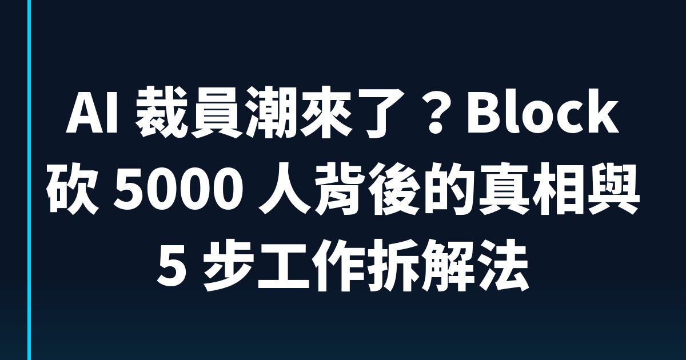
2026-03-02
AI 裁員潮來了？Block 砍 5000 人背後的真相與 5 步工作拆解法
Block 因 AI 裁員 5000 人，Anthropic 因拒絕開發自動武器被川普封殺。三個關鍵觀察加上獨家 5 步工作拆解法，教你找出自己的不可取代區。
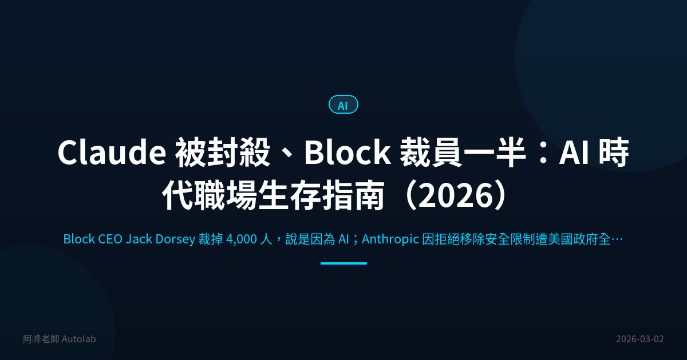
2026-03-02
Claude 被封殺、Block 裁員一半：AI 時代職場生存指南（2026）
Block CEO Jack Dorsey 裁掉 4,000 人，說是因為 AI；Anthropic 因拒絕移除安全限制遭美國政府全面封殺。這兩件同時發生的大事，說明了 AI 取代人力已不是預言，而是現在式。本文深度分析數據、各大廠立場，並告訴你現在該怎麼做。

2026-03-02
NotebookLM 逆向工程教學：3 步驟免費拆解百萬爆款影片結構（含完整提示詞）
用 Google NotebookLM 免費拆解百萬播放影片的底層結構，轉化為你自己的腳本藍圖。本文含完整提示詞範本、5 種進階應用場景，以及內容創作者的實戰心得。
2026-03-01
Vibe Coding 入門指南：工具人時代結束，用 AI 協作解決真問題
矽谷工程師被裁、公司錢拿去買 GPU。AI 時代工具人正在被淘汰，Vibe Coding 是你從工具人躍遷為擁有者的最快路徑。含 5 步驟入門實戰、台灣企業案例。